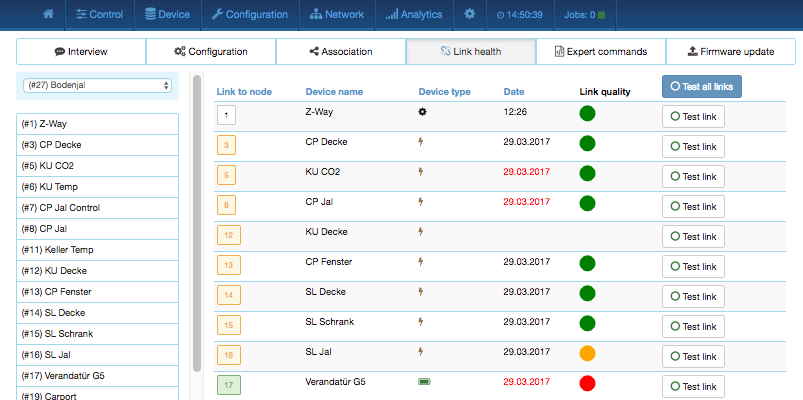
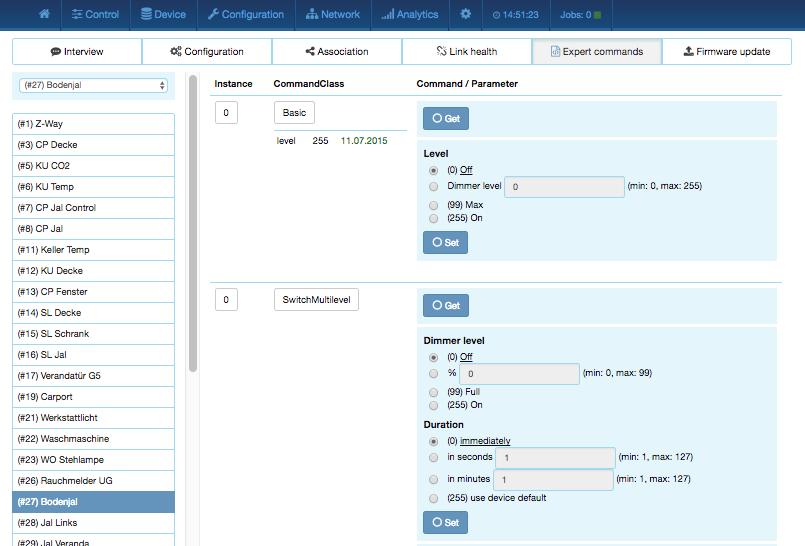

The Z-Wave Expert User Interface
The Z-WAVE EXPERT USER INTERFACE is designed for installers, technically savvy people,
and other users that know how to build and maintain a Z-Wave-based wireless network.
Hence, it uses some Z-Wave specific-language and offers detailed insight into the work
and data structure of the Z-Wave network. It allows users to:
- Add (include) and remove (exclude) Z-Wave devices and manage the network.
- Configure Z-Wave devices.
- Operate Z-Wave devices.
- Manage Associations between wireless devices.
- Access all data generated by the devices and perform all kind of functions and actions to the device.
- Look behind the scene into the data structures, routing mechanisms, and timings of
the Z-Wave control stack. This is particularly useful for debugging and software development.
The Z-WAVE EXPERT USER INTERFACE does not provide any access to a higher order business logic and
automation. Please refer to the Z-WAY SMART HOME INTERFACE for these functions.
The user interface offers a home screen and five top menu items:
- Control: Access to functions of the wireless devices included in the network
- Device: Access to information about devices
- Configuration: Configure the devices after inclusion if needed
- Network: Add and remove devices and manage the network
- Analytics: Allows debugging the wireless network (Please note that this mean item
is only shown and its corresponding functions are unlocked in the transceivers firmware
Besides the menu items, there is a configuration setting (wheel icon), a time indicator
showing the time at the time zone of the gateway and a job queue indicator. Clicking on this
job queue indicator opens a new tab displaying the job queue of Z-Way. Please refer to
Chapter 7.8 for more information about the job queue.
All values shown in the Z-WAVE EXPERT USER INTERFACE are assigned to a time stamp indicating when
the value of status information was received from the wireless network. A red color
of the time stamp indicates that the update request from the controller to the device
for this value is pending.
Figure 7.1:
Sceenshot of the Expert User Interface Home Screen
|
|
The home screen shown in Figure 7.1 offers some high level of information about
the software and a notepad where the user or installer can leave important information
for future use.
The section 'Network Information' box offers some statistics about the number of devices in
the network and how many of them are mains or battery-operated. The network health box
will list devices that have problems:
- Low battery.
- Incomplete interview.
- Device failed.
- Inconsistencies on Association settings.
Clicking on the statement will lead to a help page explaining the problems and giving
guidance for remediation.
The last infobox will contain information about devices that were removed using
the device reset function. In this case, the device will leave the network but
informing the controller. There is no exclusion process applied.
The tab Control allows operating the various types of device and shows the reported
values in case of sensors or meters. In case the control options offered here are not
sufficient, please refer to Configuration > Expert Command for a full set of functions supported by the device.
Figure 7.2:
Control Interface for Switches, Dimmers and Motor Controls
|
|
The switch dialog shown in Figure 7.2 lists all devices of the network supporting
switching, dimmer, or motor control capabilities. The device name and Z-Wave ID, as well a
the current status of the switch, are given and the time of the last status update.
The Update button forces an immediate update of the switch (if mains powered device).
A 'Switch All' Icon shows whether or not the specific device will react to
a All ON or All Off command. A green triangle indicates that the
device will react to the command shown.
All actuators can be switched on or off. Dimmer and motors controls can be operated
using a slider. For dimmer, there is a button On and Full. Full turns the
dimmer always to 100 %, diming value while On turns to the last dimming state
before the dimmer was turned off. Clicking on the table heads reorders the table
view of the data.
Figure 7.3:
Control Interface for Sensors
|
|
The sensor dialog shown in Figure 7.3 lists all devices of the network providing
sensor information. Device name and ID, the type of the sensor, the actual sensor value
and the sensor scale is listed. The date/time column indicates when the given sensor
value was received. It’s possible to call for a sensor update but bear in mind that
battery-operated device will only respond after the next wakeup.
Figure 7.4:
Control Interface for Meters
|
|
The meter dialog shown in Figure 7.4 lists all devices of the network providing
(accumulating) meter information.
Device name and id, the type of the meter, the actual meter value and the meter scale
is listed. The date/time column indicates when the given sensor value was received. It’s
possible to call for a meter update but bear in mind that battery-operated device will
only respond after the next wakeup. Clicking on the table heads reorders the table
view of the data. A meter reset button is shown for device supporting this function.
Figure 7.5:
Control Interface for Thermostats
|
|
The thermostat dialog shown in Figure 7.5 lists all thermostat devices of the
network. Device name and ID and the current set point temperature is shown. The date/time
column indicates when the given set point temperature was transferred to the device. The
set point temperature can be changed using the + or - buttons or the slider. Clicking
on the table heads reorders the table view of the data.
Some thermostats may offer different modes such as heating, cooling, off, etc. For these
devices, a drop-down list shows all modes available. In this case, the setpoint is only
valid for the mode selected.
Figure 7.6:
Control Interface for Locks
|
|
The door lock dialog shown in Figure 7.6 lists all door lock devices of the network.
Device name and ID, the current status of the lock, and the last time of the change of
the status are listed. The lock can be opened or closed.
Clicking on the table heads reorders the table view of the data.
Figure 7.7:
Control Interface for Notification Devices
|
|
The notification dialog shown in Figure 7.7 lists all notification devices.
Notification devices act like binary sensors, albeit offering some more capabilities.
Per notification device multiple events can be reported. The notification device also
allows deactivating the notification for certain events. Please note that not all
devices make use of these functions.
The menu Device gives access to overview pages with more detailed information about
the devices in the network and their actual status.
Figure 7.8:
Device status overview
|
|
This dialog in Figure 7.8 shows the actual network status of all devices. All
devices are listed by their node ID and name. The date/time indicates the time of the
last successful communications between the controller and this device (either confirmed
sending or reception). The green checkmark indicates that the device is alive. A red
sign indicates that the controller assumes the device not being active anymore. Mains
powered devices can be checked for their network availability by hitting the o
button on the right-hand side.
In case the device interview and configuration were not performed properly, a little
question mark icon will indicate this. Clicking on the question mark will open a window
displaying the details of the interview process.
The correct loading of a Device Description File![[*]](footnote.png) is indicated as
well. For a battery-operated device, the time of the last wakeup, the time of the
next wakeup, and the current wakeup status are shown. Clicking on the table heads
reorders the table view of the data. Clicking on the table heads reorders the
table view of the data.
is indicated as
well. For a battery-operated device, the time of the last wakeup, the time of the
next wakeup, and the current wakeup status are shown. Clicking on the table heads
reorders the table view of the data. Clicking on the table heads reorders the
table view of the data.
Type Info
Figure 7.9:
Device information overview
|
|
The type info dialog shown in Figure 7.9 lists all devices of the network and
indicates if they support enhanced Z-Wave functions such as Security and Z-Wave Plus.
Additionally, the Z-Wave protocol version, the application version and the device type
indicator of the device is shown.
The security icon determines what kind of security the device supports:
- : Device does not support any security class
- : Device supports security version 1
- : Device supports security version 2
- : Device supports security version 2 but authentication failed
The last column shows the security keys granted for the device.
Clicking on the table heads reorders the table view of the data.
Battery
Figure 7.10:
Battery status overview
|
|
This dialog shown in Figure 7.10 gives an overview of the battery status of the
battery-operated devices in the network. Devices are listed by name and id. The last
reported battery level (0–100 %) including update time is shown as well as the number
and type of battery if known. The Update All button will request a status update
from the device. The new status will be available after the next wakeup of the
device. Clicking on the table heads reorders the table view of the data.
Active Associations
Figure 7.11:
Active association overview
|
|
This overview page shown in Figure 7.11 lists the current association set in the
network. The Lifeline is an association to the gateway to report status changes and heard
beat and can be hidden if needed. A Change button leads right to the configuration
page of the device to change association settings.
Configuration
The tab Configuration allows configuring the functions of a particular device. Pick
the device to be configured from the drop-down list or pick the device from the full list
shown on the left-hand side. The functions of the device are grouped into 6 tabs.
Interview
Figure 7.12:
Device interview
|
|
Configuration > Interview, as shown in Figure 7.12, documents the result of
the device interview. In this process, the controller tries to get information about the
device. In case the controller finds a device description record for the device, it
will display further information about the device that cannot be obtained from the device itself:
- Product Image
- Information regarding how to include the device
- Information for battery-operated devices about how to wake them up manually
- Human-readable meanings of configuration parameters and values
If the software will not automatically recognize the device and load the description
record a button Select Device Description Record allows doing this manually. However,
the description file must be present. Chapter 13.5 gives further information on
how to create an own Device Description Record and load it into Z-Way.
The interview stage line gives information about the progress of the device interview.
There are a few reasons why an interview is not complete: In most cases the devices went
to deep sleep too early to have some wireless connectivity problems. The
button Force Interview allows re-doing the whole interview. The button Call for NIF
requests a Node Information Frame from the device and the Button View Interview Result
allows displaying the information about the different command classes found during the
interview. It is also possible to force the interview of a certain command class only.
The button ZDDX Code Creator allows creating an XML description file usable for
certain device databases.
The only configuration option on this tab is to change the given name of the device.
During inclusion, the software generates a generic name, but it is highly recommended
to change this name. The given name should be descriptive but not too long.
Configuration
Figure 7.13:
Configuration - convenient view
|
|
Configuration > Configuration shown in Figure 7.13 allows configuring the device. If the
specific device was recognized correctly the different configuration values are translated
into human-readable dialogs. Every configuration comes with standard dialog options:
- Time Stamp, when the configuration value was last updated
- Set Value as integer
- Information about the default value of this particular parameter
- Button to reset to default value given by the device itself
- Button to save the parameter into the device
If the device is not known (means there is no Device Description File assigned to it) it
is still possible to set configuration values. Figure 7.14 shows the generic
configuration dialog used in this case. The specific configuration parameters and
its values need to be read from the device manual.
Figure 7.14:
Configuration - generic view
|
|
There are four more command classes that may need additional configuration and are
displayed in the same dialog if the device supports them.
- Wakeup: Define the wakeup interval and the node is of the main controller taking
care of the wakeup sequence. The controller will set a standard wakeup time of 1800
seconds unless the devices sets a different minimal or maximal wakeup time. In most
cases the node ID of the controller is the correct setting for the target node ID and
should not be changed. In case this controller is only a secondary controller, this
value may change. A tool tip on the input field shows the allowed minimum and maximum
wakeup time as reported by the device.
- Protection: In case the device supports local protection, meaning suppressing
local use of the device, the behavior of this function can be defined. The protection
command class offers more options than displayed here. Refer to the Configuration > Expert Commands
tab for a complete set of controls.
- Switch All configuration: Z-Wave supports the so-called switch all function as
a broadcast to all switches and dimmers. This setup defines the reaction of the device
to such a Switch All command. The setting is also displayed in the Control > Switches
section as little gray/green icon.
Note: For mains-powered and FLIRS devices, the button Save this parameter or
Save into Device will activate the changes within few seconds. For battery-operated
devices, the commands are stored to the next wakeup. It’s possible and recommended to
wake up the device manually to speed up the change of configuration values.
Association
Figure 7.15:
Association dialog
|
|
Associations allow switching a Z-Wave Device B (target) as a result of an event in
Z-Wave Device A (source). Z-Wave Device A manages a list of devices to be controlled for
each event supported. The device list associated to a specific event—also called
association groups—and the devices that are associated with it are shown in the
association tab in Figure7.15.
In case the information is provided either by the device or by the device record
stored in the software, the meaning of the events is written. Otherwise, the
event group is shown unnamed as number only. In this case, refer to the devices
manual for more information about the association group meaning.
The stored devices can be called from the actual device using a button. The buttons +/-
used to add and remove device from the group. A dialog is opened and a device can be picked.
In case this device has multiple instances, an instance drop-down list will appear allowing
to choose the right instance of the target device. The node ID and—if applicable—the
instance ID are shown in the target device list. Move the mouse over the ID to show the
complete given name of this device. The color of the device name or ID indicate the status
of the association entry:
- Yellow: Selected in user interface but not stored in device.
- Grey: Active in device but not selected in user interface.
- Blue: Selected in user interface and stored in device.
Link Health
Figure 7.16:
Link health
|

|
Modern versions of Z-Wave allow testing the quality of a link between two devices in
direct wireless range. The dialog shown in Figure 7.16 lists all devices in
wireless range and gives an indication about the quality of this link. The following
colors are used:
- grey: untested
- green: good quality
- yellow: reasonable quality
- red: link quality insufficient
Individual links can be retested using the Test all links button. It is also possible to
test all links from a given device. However, please keep in mind that this process may
take several minutes to complete.
Figure 7.17:
Experts commands
|

|
Configuration > Expert Commands as shown in Figure 7.17 displays the status values and
possible commands in a very generic way. On the left-hand side, the different instances
(channels) of the device are listed in a column. In case there is only one channel (that’s
the case for most devices), only channel/instance 0 is shown. Clicking on the number
opens a dialog showing all internal variables for the channel. The next column shows all
the command classes exposed by the device. Again, clicking on the name opens a dialog with
more internal status variable information for this command class.
On the right-hand side, there is a list of commands. This dialog form is auto-generated
from the information provided by the command class itself and not optimized for daily usage.
Firmware Update
In case the device supports a firmware update “over the air,’’ this dialog is shown to
perform such a firmware update. The firmware file to be uploaded must be available in a
raw “BIN’’ or the Intel hex “HEX’’ file.
The target field allows specifying the target memory/processor for the update process.
For updating the Z-Wave firmware part a “0’’ must be set. The firmware updating process
will take up to 10 minutes. Please don’t do any other operation during this time.
It may be required to activate the firmware update mode on the device to be updated.
Please refer to the manual for further information about activation.
The network section of the user interface focuses on the network as such and offers all
controls and information to build, manage, and repair the wireless network of the controller.
Network > Control summarizes all commands needed to manage the network and the controller.
The page is structured in four boxes.
Figure 7.18:
Network Management
|
|
The device management box as shown in Figure 7.18 allows including and excluding
Z-Wave devices. A status display shows the status of the controller. The Include Device
and Exclude Device button turn the controller into the Inclusion and Exclusion mode. In
this case the status display changes and the resp. buttons turns into a Stop function.
The inclusion and exclusion modes will time out after about 20 seconds but can always be
terminated using the Stop buttons.
Another way to stop the inclusion mode is to actually include a new device. In this case
the inclusion mode will stop and the node ID of the new device is shown. The controller
generated a default name of the device as combination of its primary function and the
new node ID. Clicking on this default name leads to the Configuration page where the
name can be changed and other configuration tasks can be performed.
Please refer to the devices manual on how to do an inclusion. In case the
inclusion does not work as expected, please exclude the device first. More than 90 % of
all inclusion problems are caused by still included in a different network and can then
not being included again.
The Exclusion mode also stops when one device was successfully excluded. This function
can exclude devices from other networks too but the device need be available and
functioning. To remove nonfunctioning or disappeared devices please refer to
Replace Failed node or Remove Failed node.
In case the new device supports enhanced security function (Security Command Class), this
controller will include the device securely. After this all data exchange between the
controller and the new device is encrypted using AES encryption. For performance reasons,
it mays be desired not to use the security function. The slider Force unsecure inclusion
turns the controller into a mode where all security functions are suppressed for the included
device. Security functions of other devices are not impacted. In case the new device supports
Security S2 right after inclusion, a pop-up window will appear asking the user to grant the
S2 security keys.
A few basics about this process: Security in Z-Wave means among others that all
communication between two nodes over the air is encrypted. Encryption however requires
a key to encrypt and all the device communicating shall have the very same key—usually
called network key. Z-Wave Security 2 handles 4 different network key. They differ by
their level of trust.
- S0:The network key is needed to communicate with a device capable of Security CC
Version 1. Hence, this is more for backward compatibility.
- S2 Unauthenticated: The device-specific key of the device included is not verified.
In case the device has its key (as PIN number of QR Code) on the enclosure, it is possible
to compare the two numbers but the key assignment does not verify this choice.
- S2 Authenticated: Right after inclusion, the device-specific key (as a PIN or AR code)
must be manually provided to the included controller in order to verify the identity of the device just included.
- S2 Access Control: This key requires similar authentication than S2 authenticated.
This additional key is provided to separate control of door locks and other access devices from other devices.
Figure 7.19:
Z-WAVE EXPERT USER INTERFACE - S2 key selection
|
|
Each device will request one of more network keys according to the device
usage and implementation idea. The default key is likely S2 Authenticated but Door Locks
will ask for S2 Access control and small devices without external label request S2
Unauthenticated only. Figure 7.19 shows the dialog to grant the keys. The
requested key is displayed in bold letters. The user has 20 seconds to select the keys to be granted.
If no selection is made with 20 seconds, the process will time out and the device is
included unsecure. Please note that some devices may still offer valid functions
while other will deny any function outside a secure environment. It is recommended
to grant the keys requested, but there may be certain environments where other
selections may make sense.
Figure 7.20:
Z-WAVE EXPERT USER INTERFACE - S2 key display
|
|
Once the selection is made before timeout a second window will request
the authentication of the device. In case of S0 or S2 Unauthenticated, the window
displays the device-specific key for information only as shown in Figure 7.20.
If a key is visible on the device, it is recommended to compare the numbers. However,
the key is granted without any further interaction by the user.
Figure 7.21:
Expert User Interface - S2 authentication
|
|
In case S2 Authenticated or S2 Access Control keys were requested the
dialog windows asks for providing the Device information by the user. This can be done
by typing in the 5-digit PIN code (first 5 numbers of the device-specific key) as shown
in Figure 7.21 or by
scanning the QR code on the device shown in Figure 7.25.
In case of Access or Authentication, the user must insert either a PIN
number or scan a QR code from the device just included. This insures 100% that the device
just included is really the device in hand.
If authentication fails, an error message is displayed. It is not possible to redo
the key authentication only. You must exclude and re-include the device.
Smart Start is a new way to include devices into Z-Wave using the QR code provided with S2
authentication. The user scans the QR code thats is stored in an internal so called
provisioning list. Smart Start Devices will then announce to be included when powered up.
In case the S2 key is in the provisioning list the controller will automatically include
this new device without any further user interaction.
Smart Start is controlled by the button Activate/Deactivate Smart Start.
The button Smart Start opens a submenu allowing to register Device keys either
by typing the 8 groups of numbers as shown in Figure 7.22 or using
a QR code scanner as shown in Figure 7.23. Please note that a standard
web browser running on a standard PC may not provide the capability to scan QR codes.
Figure 7.22:
Smart Start - enter Device Key (DSK)
|
|
Figure 7.23:
Smart Start - scan QR code (on smart phones only
|
|
Figure 7.24:
Smart Start Provisioning list
|
|
Figure 7.24 finally shows the lost of Device keys already registered
in the system and not used. Used means in this context that the corresponding device
was powered up in proximity of the controller and got included automatically. Please note that
the Razberry Shield or UZB or any hardware used must provide a firmware with SDK >=6.81.
Otherwise Smart Start will not work.
This button will only be active if Z-Way is in factory default state. Only in this case
the controller can be added to a different network as secondary controller. The controller
of the other network must be in either the Inclusion or in the Exclusion mode, and the
Learn button confirm the process.
Figure 7.25:
Z-Way- own key for authentication
|
|
In case the new primary controller supports Security S2 a dialog window
will pop up right after finishing the inclusion by the new controller. This dialog window
will show the PIN number and the QR Code of this Z-Way controller needed to authenticate
against the new controller.
The Start Change Controller function actively hands over the role of the primary controller
of the network to a controller that will be included using the normal inclusion process.
The controller status dialog shows the mode and its termination.
Backup and Restore
The next dialog box of the page allows creating and using a backup. The backup file is
stored on the local computer. Please note that any restore will overwrite the existing
network. The restore operation must therefore be confirmed in another message box. A
checkbox defines if the node information in the Z-Wave chip itself will be overwritten
as well. This operation result in a possible loss of all network relationships and may
require a re-inclusion of devices. Handle with care!
The controller maintenance offers two reset buttons. The Z-Wave Chip Reboot restarts
the operating system of the Z-Wave transceiver chip. This can be done safely all the time.
The Reset Controller turns the controller back into factory reset. All connections
to included devices and all configurations and settings are lost. This function must be
handles with extreme case. An additional dialog requires to explicitly confirm the
function. Only use this function if you know what you do!
Operating Frequency
This dialog allows changing the operating frequency. Please note that a wrong frequency
will block all Z-Wave traffic and make the device inoperable. Frequencies can only be
changed within one frequency group. These are the frequencies shown side by side (e.g.
EU, RU, IN, ...). Changing to a frequency outside this group will technically work but
the wireless range will be few centimeters only. Hence, this for workbench testing only.
The device will reboot after a frequency change so please allow some time for restart.
The function Remove Failed Node allows removing a node that is no longer communicating
with the controller. After multiple failed communications with a device the controller
will mark this device as failed and avoid further communication. This function finally
removes such a device from the network configuration. The drop-down list will only show
IDs of failed nodes. If this list is empty this is a good sign!
It is also possible to Replace a Failed node with a new node. This is a combination
of removing the failed node and adding a new node. Using this function makes sure the next
included node has the same node ID as the failed node. The drop-down list will only show
IDs of failed nodes. If this list is empty this is a good sign! Battery-operated devices
are mainly in deep-sleep state and will not answer to communication requests. Hence, the
controller will never automatically detect if a certain device is defect or gone. The
function Mark battery device as failed manually marks battery-operated devices as
failed so that they can be removed or replaced. The drop-down list shows all battery-operated
devices but this does not mean that they are failed.
The Request NIF from all devices function is just a convenient way to retrieve a Node
Information Frame from all devices of the network.
The SUC/SIS Management pane allows manipulating the self-organization of the Z-Wave network.
Don’t use this unless you are a developer who knows when and why this is needed for testing purposes.
This table in Figure 7.26 shows the neighborhood relationship of devices. The id,
the name and the type of the node are listed. Green indicates that the two devices are
in direct wireless neighborhoods and don’t need any other device to forward their signals.
A red color between two nodes indicated that routing is needed between these devices.
The Update button calls the device to scan its neighborhood and report back the
result to update its own line of the routing table.
Figure 7.27:
Reorganization
|
|
The reorganization page controls as shown in Figure 7.27 an algorithm that
reorganizes the network relationships and fixes problems. With checkboxes various stages
of the algorithm can be selected. The result of the reorganization is shown in a log and
can be downloaded. The network reorganization calls for every node to redetect its neighbors.
This operation will work if there is a working route to this device and this device is
not sleeping. If the operation fails, the algorithm will have three more attempts to
reflect possible routes to the very device that may be reestablished during the
reorganization. Detection of neighbors for battery-operated devices will be started after
all mains-operated devices are processed. The requests to battery-operated devices will
be queued. For more information about job queuing, please refer to Chapter 7.8.
The Poltorak-Chart as a way to map the network is an extremely powerful, informative but the same time very complex
viewgraph of the network situation in a home. The chart visualizes the possible links between
the nodes and how they are used. If provided by the devices the chart will furthermore show
complete routes and the signal strength of the individual links of a route. However only
devices with SDK greater or equal to 6.71 will provide this additional information.
Initially all nodes are displayed with equal distances. It is possible to drag and drop
the nodes to match the distances between them with the real distances. This will always
work quite well if the Z-Wave network is in one floor only.
A 2D map can be uploaded as background image to support the mapping.
If the network is distributed on multiple floors it is recommended to do a best guess
to keep the round initial view.
Figure 7.28 shows a typical chart. By clicking on a certain node and then
moving the mouse over it again, it is possible to analyse the traffic from and to this
very node. This allows focusing on the situation of this node only.
Figure 7.28:
Poltorak-Chart
|
|
The lines between the nodes represent the wireless connections and the communication between
the nodes. The following information is encoded in these lines:
- Color: The color indicates the wireless signal strength of the connection if it can be
measured. Red means a very high wireless signal.
The device is likely very closed or in direct sight of the each other. A black color means a
standard wireless strength, gray indicates that the received signal strength (RSSI value)
is not known.
- Thickness: The Thickness of the line indicates the amount of traffic running over
this line. This can be direct communication between the two links or routed traffic. If a
route exist there will be a single pixel line. Every line thicker than a pixel shows real
traffic.
- Dotted versus solid: A dotted line indicates that this link is sometimes just not working.
The Timing tab in Figure 7.29 shows some very valuable timing information of
communications between the controller and other devices. All other devices the controller
has communicated with are shown in a list. The number of packets and the percentage of
successful communication are shown. This can give an indication about the stability of
the communication link between the controller and this device. On the right-hand side,
the timing delay of each communication is shown and color-coded. A red number indicates
that this communication finally failed. A communication without rerouting attempts as
shown as green and a rerouting attempt is coded in black. The fact that a communication
failed (red) may indicate that there is a severe problem in the network or in the device.
It is however also possible that a battery-operated device just went back to sleep too fast.
Z-Wave professionals can read a lot out of this timing information particularly when combined
with the routing table. Please refer to Chapter 8 for more details on
troubleshooting Z-Wave networks.
Link Status
The link status map, as shown in Figure 7.30, summarizes the device-specific link
status information from the configuration sections.
The following colors are used:
- grey: untested
- green: good quality
- yellow: reasonable quality
- red: link quality insufficient
The links from one device can be retested using the Test link button. However, please
keep in mind that this process may take several minutes to complete.
For devices that do not offer a link status function in their firmware, there is a simple
connection test to the Z-Way controller using a “NOP.’’ Please note that this function
does not test a direct wireless connection but the route to the controller only.
Figure 7.31:
Controller Info
|
|
This menu item as shown in Figure 7.31 provides some internal and very technical
information about the Z-Way controller software, hardware, and firmware. The different
submenu items are self-explaining.
Some buttons allow special maintenance functions:
- View Job Queue: This button opens a new tab with a list of all wireless jobs in
the system. For more information about this, please refer to Chapter 7.8.
This is needed for debugging purposes only.
- Send Controller NIF: Sends out the Node Information Frame of the Z-Way controller.
This is needed for debugging purposes only.
- Debug Mode: When active this button is shown in green. Active debugging unlocks
some special function embedded in the rest of the Expert User Interface. Among them is the
user interface to edit so-called “Postfix Records.’’ The postfix function allows changing
device capabilities after the device interview. Typical postfix entries suppress certain
functions that are announced by the Node Information Frame of certain command classes but
not or wrongly implemented. Postfix is also used to rename certain functions to more
meaningful terms. Post fix entries are typically created during device testing.
- Show controller data and Show controller's device data: The controller is a
special node in the network but still a node. Therefore, buttons allow accessing the device
specific data of the controller and issue a Node Information Frame. A third button gives
access to the controller specific data. Most of these data is only relevant to developers.
- Firmware Update: This function allows updating the function of the Z-Wave
transceiver used by Z-Way. Only valid update files will be offered. It is possible to
add so-called tokens. These is a special string used to identify special function
firmware or beta firmware. They are sued to make sure that this special firmware is only
available to those that really need, e.g. for testing.
The last block of the dialog shows the availability of the function calls on the serial
API between the Z-Wave transceiver and Z-Way. “Not implemented’’ means that Z-Way is
either not knowing about the function indicated by the function ID or does not make any
use of it. A red function call ID or name indicated that Z-Way can use this function, but
the transceiver’s firmware did not report to offer this service.
Annex ![[*]](crossref.png) gives a full overview of the Functions used and supported by Z-Way.
gives a full overview of the Functions used and supported by Z-Way.
Z-Wave protocol defines a minimal level of interoperability via Basic
Command Class. Most devices do act on Basic Set commands mapping it
to Switch Binary Set or Thermostat Mode Set or some other.
Z-Way is able to control other devices using speical Command Classes or
using Basic Set.
Z-Way is handling incoming Basic Set and creates a virtual device that
reflects the state of the last Basic Set command recieved. This
allows to work with old devices that do not send Reports or
Central Scene Notification to the LifeLine association group. Z-Way is
ignoring Basic Get commands.
Z-Way supports both Security S2 and Security S0 protocols and implements
very strict security rules. See Table 7.1 for more
information.
Table 7.1:
Supported Command Classes depending on the security level negociated
| Negociated security |
Unsecure NIF |
Security S0 NIF |
Security S2 NIF |
|---|
| No or failed security |
| ZWavePlusInfo |
| Version |
| MultiCmd |
| Security |
| SecurityS2 |
| Supervision |
| ManufacturerSpecific |
| NodeNaming |
| ApplicationStatus |
| CRC16 |
| PowerLevel |
| Association |
| AssociationGroupInformation |
| MultiChannelAssociation |
| DeviceResetLocally |
| TransportService |
| InclusionController |
|
- |
- |
| Security S0 |
| ZWavePlusInfo |
| MultiCmd |
| Security |
| SecurityS2 |
| Supervision |
| NodeNaming |
| ApplicationStatus |
| CRC16 |
| PowerLevel |
| AssociationGroupInformation |
| DeviceResetLocally |
| TransportService |
| InclusionController |
|
| Version |
| MultiCmd |
| ManufacturerSpecific |
| NodeNaming |
| ApplicationStatus |
| CRC16 |
| PowerLevel |
| Association |
| AssociationGroupInformation |
| MultiChannelAssociation |
| DeviceResetLocally |
| InclusionController |
|
- |
| Security S2 |
| ZWavePlusInfo |
| SecurityS2 |
| Supervision |
| TransportService |
|
- |
| Version |
| MultiCmd |
| ManufacturerSpecific |
| NodeNaming |
| ApplicationStatus |
| CRC16 |
| PowerLevel |
| Association |
| AssociationGroupInformation |
| MultiChannelAssociation |
| DeviceResetLocally |
| InclusionController |
|
|
The analytics menu offers functions to troubleshoot a Z-Wave network. Details about the
dialogs are provided in Chapter 8.
The setup dialog offers various options to adapt the behavior of the Z-WAVE EXPERT USER INTERFACE :
- Language: Pick your user interface language by clicking on one of the flags.
- System Settings: This option allows setting the date format and the time zone.
- Report Problem: This option allows reporting user interface bugs. Please note that
the form will transmit the test, he option email address for questions and answers plus
some internal version and status information.
Job Queue
The job queue, as shown in Figure 7.32, offers some deep insight into the dynamics
of the controller software. It visualizes the (wireless) task execution of the system.
Every communication attempt of the controller is queued and then handed over to the Z-Wave
chip for execution. The list shows the jobs pending and the jobs that are completed or failed.
A legend informs about the meaning of the different flags n, U, D, E, S, and W. The timeout
value counts back from 20 seconds once the job was sent. Even when it is completed, the
job will stay in the queue marked as done (D) for some more time to allow inspection. The
target node ID, a description of the communication message, information about the process,
and the real bytes of the message are shown as well.
Footnotes
- For more information about
Device Description files, please refer to Section 7.4.1.